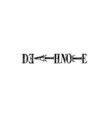

Death Note
Synopsis: When Light Yagami discovers a mysterious notebook that allows him to kill anyone by writing their name, he attempts to create a utopia while being pursued by the genius detective L.
Total Episodes: 37
Episode Duration: 23 mins
Total Seasons: 1
Genre(s): Supernatural, Thriller, Psychological, Mystery
Type: TV
Studio(s): Madhouse
Release Year: 2006
Start Date: October 4, 2006
End Date: June 27, 2007
Airing Status: Finished Airing
Broadcast Schedule: Wednesday at 00:56 (JST)
Age Rating: R - 17+ (Violence & Profanity)
IMDb Rating: 9.0/10
Available On: Netflix, Crunchyroll
Related Works: Live-Action Films, Specials